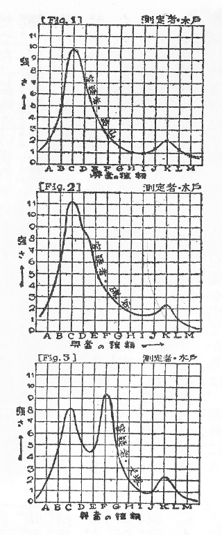
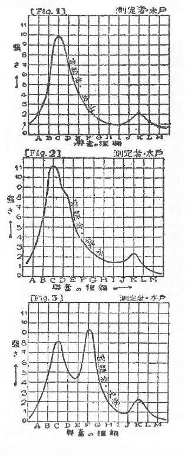
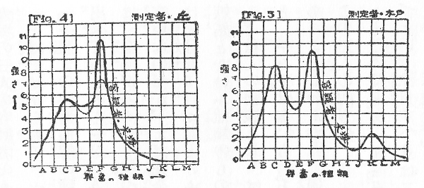
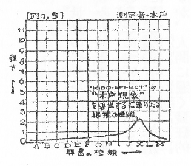
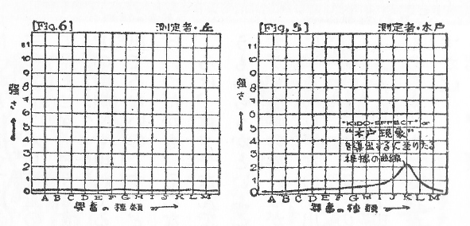
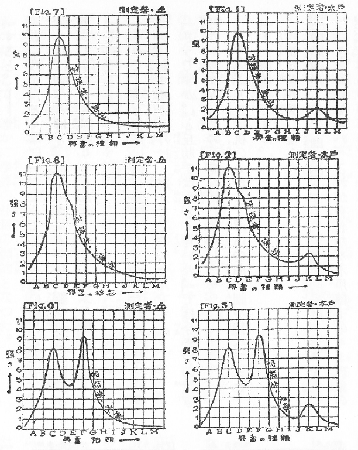

「うふふん。――」
と
咳払いをなされた木戸博士は、ご自分の計算机からお立ちになり、ズカズカと助手の
丘数夫の席までお出でになった。
「こういう事になったよ。――」
と
仰有ると、丘助手の前へ、三枚の曲線図をバサリと投げだされた。
「……」
丘助手は、突然の博士のお出でに、思わず
襟を
正して立上った――というより、飛上ったという方が当っているかも知れない。何しろ丘数夫は、この研究所では
極く
新参者なのであるから。
「この第一図、第二図、第三図の三つを見給え。すべては
明瞭すぎるほど明瞭じゃ」

博士は Fig. 1 Fig. 2 Fig. 3 と、英語で図番号をうってある三つの曲線図を、一列にキチンと並べられた。
「はア――」
丘助手は
頓に返辞もなりかねて、図面の上に視線のいなずまを降らせた。
（測定者・木戸とあるからには、これは先生の測定されたものに違いない。なんだか山の形をした曲線が出ているが、第一図のと第二図のとは富士山のような形だ。第三図のだけは、
二見浦の夫婦岩を大きくしたように、二つの
瘤がある。これは一体なんのことだ）
と丘助手は三つの図案を見較べ、ちょっと小首を
傾けた。
「実に明瞭じゃろうが……」
と木戸博士は、お
独りで感に
堪えながって
居られた。
「はア、はア――」
（で、これは早く三曲線の意味を呑みこまないと、先生に対して申訳ない――申訳ないらしい）と丘助手は一生懸命に理解しようと、三曲線をその
網膜に送りこんでいる。（容疑者の
烏山と
磯谷と
犬塚――すると、これは三人の容疑者に関するものらしい。三人の容疑者と……ハテナ……）
「ウン」と思わず口走って、
（そうだ。あの事件の容疑者のことかも知れないぞ）と彼は、ようやくのことで思いだした。
あの事件――とは？
それについて
筆者は、次に短い
紹介をして置きたいと思う。
満洲の、ずっと北の方の話である。
地図を開いてごらんになると判るが、
東支鉄道が
黒竜江省を横断している。
なおよく御覧になると、この東支鉄道は
大興安嶺をプツリと横断しているのだ。場所は
博克図駅と興安駅との間に
於てである。そしてもっと
詳しく云うと、この両駅の中間に「
興安嶺隧道」と名付けられた長さ三キロメートルつまり三十
町ちかくもある大トンネルがあって、これが興安嶺をプツリと横断しているのだ。あの事件というのは、実にこの隧道内に於て起ったものなのである。
さて事件のあった朝というのが、こと
稍旧聞に属するが去年の夏八月の某日のことだった。午前七時
丁度という時刻にこの
博克図駅を問題の列車は興安駅の方へ向って進発したのだった。長時間の夜汽車だったもので、室内は煙草のひどい煙と、
悪食乗客の口臭と、もう随分永く女なしでいる若い旅行者たちの何というかオトコ臭い匂いとで、ムッと
咽せかえるような実に
堪えがたい一夜だった。それが間違いなくやってきた
黎明と共に、ガタンと落とした窓からスースー
脱けていってしまって、代りに新鮮な空気が、新鮮な朝という容器に盛られてみなみなに
薦められ、ホッと
蘇生したような気持になった。殊に列車が
博克図を出てからは、窓外にスクスクと伸びた
白樺の美林が眺められ、乗客も乗務員ももう何事も忘れて、
貪るように朝の空気を肺臓へ送りこんでいた。
「あの白い白樺の幹と、女の股とは、どっちが色が白いだろうなア」
「ウン。うわッはッはッ」
「うわッはッはッ」
神をも恐れぬというべきであろうか、何といっても此処は奥地を走る列車内のことである。こんなあられもない言葉を吐き出す一団が、ひと車輛全部を貸切りにしていても、あえて驚くにはあたらない。
この一団というのは、開発移住団と称して一行四十名
一と
塊となってくりこんできた連中なのであるが、開発の美名に隠れて何をするつもりか判ったものではないギャング一味だった。それも、銀行を襲ってケチな金を奪い、後ですぐ検挙されるような青いギャングとは少しギャングが違うので、非常に統制と訓練とに富んだ云わば本格的暴力団ともいうべき種類のものであった。一行は赤でもなく白でもなく、親分「岩」に率いられてその胸三寸次第で
如何様にも突入していったのだった。
ただし
此の「岩」こと
岩丘岩九郎はその
物凄い腕前をもって、単なる
風来ギャングとしてでなく、或る有力者を脅迫し相当大ぴらに行動していた。それは、この
怪しからぬ一味が、当局の厳しい取締の
網目をすりぬけて
此処満洲を堂々と貸切列車で押し進んでいっているということから考えても、それと
肯けるだろうと思う。――
筆者は簡単に
喋ると断って置きながら、「岩」一味の説明に大変手間どってしまった。
さて此の一団の乗った列車は、白樺の
美林をめぐる二十七曲りをどうやら切り抜けた末、
「ぽーッ」
と警笛一声、例の長さ三十町もあるといわれる
興安嶺隧道のなかへ
潜りこんだ。
たちまち
轟々とひどい隧道内の反響だった。明るい室内の光線が急に曇り、黒インキがどッと流れだしたように暗闇が押しよせてきた。
「ああ」
誰かが低い声で叫んだ。
「ああ、電灯が
点かない……」
別の声が
呻吟いた。
矢のように走り去る光線だった。僅かに
残光が
窓枠の四角な形を切り出していたが、それも
吸い
取紙で吸い取られるように薄れていった。そして遂に黒インキのような絶対暗黒がやって来た。その絶対暗黒という魔物は、
尚も恐ろしい力で室内の空間を
圧し拡げていった。
レールの上に狂奔乱舞する車輪の
殷々たる響が耳底を流れてゆく――それだけのことの感覚で、乗客たちは自分が生きているということを
辛うじて認識した。
しかし正確にいえば、この間自分の生きていることを既に認識し得ない乗客が一人あったのだ。
「ウーム」
という低い
呻り声を耳にした者は、かなりにあった。
はッ――。
と思う間もなく、ガーンと厚い鉄板を一つ叩きつけたような音がして、それに引続き遠くの彼方へ地震が動いてゆくようなとでも云うより外に云いあらわし方のない気持の悪い振動が、ゴトゴトゴトと向うの方へ遠のいていった。
ふたたび列車が、パッと明るい隧道の向うへ脱けいでたときには、四十人の団員が、いつの間にか三十九人になっていた。
ガン、ガン、ガン。
機関車に近い方の扉が
自暴に鳴って、やっとそれがガラリと開くと、真赤な顔をした車掌がピストル片手に飛びこんで来た。
「だッだッ誰です。扉を内側から
押さえていたのは……。けッけッ怪しからん」
六尺豊かな、まるで
角力取のような専務車掌は、
湯気のたつような怒り方だった。
ギャング一団は、鬼がお姫様に化けたように取り澄まし、そっぽを向いて知らぬ顔をしていた。
「いま
隧道の中で、何か変事があったと後部車掌が報せてきたのに、これじゃ駈けつけることが出来ないじゃないですかッ。もしも重大なる変事だったら……」
「おおい、此処だア」と其の時、一輛後車室の窓から後部車掌が声をかけた。
前部車掌は車室を
縦走して、後部車掌のところへ飛んでいった。
「あれを見ろッ」
後部車掌は
真青な顔をして、握ったピストルの
慄える
銃口で指し示した。
「うわッ。――やったナ！」
前部車掌の顔面も、たちまち
真蒼に変っていった。
車輛と車輛との間が、
鋼鉄車体のところといわず、連結器のところと云わず、真赤な
血飛沫がベットリ附着し、下の方へ
雫がポタポタと
墜ちていた。墜ちた真赤な
斑点は、レールとともに飛ぶように後へ走った。
過失？ 故意？
二人の武装車掌は、ツと寄って耳打ちをすると強く
肯き合った。そして両方に別れると何喰わぬ顔をして、貸切車室の両出口に立ちふさがった。
本部からは既に此の列車へ、例の一味を警戒すべしという電報がきていたし、
隧道に入って不思議に電灯が点かなかったこと、そこへ今の
惨事が発生したこと、これだけあれば車掌たちの
執るべき手段は
至極明瞭だった。
果然、列車が興安駅に
著くか著かない
裡に、早くも警備軍の一隊がドヤドヤと車内に乱入すると、
矢庭に全員の自由を
拘束してしまった。
興安嶺トンネル殺人事件！
丘助手は改めて第一図、第二図、第三図を見直したのだった。
「うふふん。――」
と
咳払いをなされた木戸博士は、
乾枯らびた色艶のわるい
指頭を Fig. 1 に近づけられて
扨て
仰有った。
「興奮曲線――と名付ける
わしの研究じゃ。どうしてこの曲線を
画くか。それは
Ｚ・Ｆ・Ｐ誌一九三〇年九月号第三〇
頁に出して置いたところで明らかじゃ。要するにそこの隅にある
自記装置でこれだけのものが画けるんじゃ。
凡そ人間というやつは、興奮の振動体のようなもので、いつも二十四時間、なにかかにかの興奮に神経を
焦がしている。腹が減ってくると、食慾が起り、牛肉のスキ焼が
喰べたいとか天丼をムシャムシャやりたいとか興奮してくる。夜となれば昼間の精神的刺戟が
滓の如く
析出してきてこれが夢という興奮を
齎す。興奮のない人間というのは殆んど
稀じゃ。
興奮は神経的なものじゃから、電気現象の一種と考えることができる。そして電気現象であるによって其の強さを測定することが出来る。強い興奮はメートルの針を大きく振らせ、弱い興奮はメートルの針を少しばかり動かす。ところでじゃ。
わしが
曩に
Ｚ・Ｆ・Ｐ誌に発表したとおり、わしは興奮を其の種類によって分析することに成功したのじゃ。これは何しろ
一と通りや
二た通りの苦心ではなかった。……」
そこで木戸博士は、研究当時の苦心を
偲ぶかのようにジッと
瞑目し、しばし手を額の上に置かれたのだった。

「実に骨を折ったものじゃ。しかし結果をいえば至極簡単である。興奮の種類を分けることは、
丁度ラジオ受信機の
目盛盤を廻すと、その目盛に応じて各所の放送局が出てくるのと同じことじゃ。東京の第一放送が出ているのを、すこし廻すと広島ＦＫの放送が出る。もっと廻すと札幌のＩＫ、名古屋のＣＫ、新潟のＱＫ、熊本のＧＫ、静岡のＰＫ、仙台のＨＫなどという具合に、二十七ヶ所の違った放送が目盛盤のひねり
様一つで出てくる。
それと似た仕掛けを、例の装置の中に
設けてさえ置くと、興奮の種類を分けることが出来るばかりか、さまざまの興奮の強さを知ることが出来る。ラジオの目盛盤をひねって各局を聴いてみると、東京の第一放送は強いが、広島の放送は大変弱いとか、札幌のは全然感じないとか、次の名古屋のは東京第一ほどではないが相当に強いとか……そんな風に強さを比較することが出来るのと同じじゃ。つまりＡの興奮は強さが２で、Ｂの興奮は強さが５で、Ｃの興奮は強さが
10、Ｄの興奮は強さが７などという風に、強さがメートルの上にあらわれる。それを図に画くと、Fig. 1 のような曲線になる。よいか――」
木戸博士は鉛筆を手品師のように何処からともなく取出されて図面の端にスラスラと数字を書き並べられたことである。

「まず
Ａが２じゃ。すると横の軸に『興奮の種類』がとってあって、その
Ａの上に、強さを示す縦の軸の数字２の高さに一つの点をＸと記す。次に隣りの
Ｂの上に、興奮の強さをあらわす
５の高さをとりＸ印をつける。それから
Ｃの上には、一番強い
10の高さのところにＸ印を書きこむ。――こうして求めた点はもっと多いのじゃが、その点で線を横に
繋ぐとこの Fig. 1 のような曲線になる。この曲線を一と目見れば、其の人間に宿っている興奮が手にとるようにアリアリと判る。そこで次の Fig. 2 Fig. 3 も、同じ手段で興奮曲線をとることが出来たのじゃ」
測定者・木戸――とサインされてある
此の貴重な三つの曲線の意味は、
漸く助手の丘数夫の頭脳に
朧気ながら理解されるに至った。しかしＡとかＢとかＣとかいう興奮の種類は、じたい如何なる興奮を示すのであるか、容疑者の
烏山とは誰か、
磯谷とは、
犬塚とは？
「先生」と丘助手が呼びかけた。
「うふふん。――」と博士は
咳払いをもって答えられたが、講義の腰を折られたことを腹立たしく感じていられることは、その咳払いの調子からソレと察せられるのだった。
「先生。これは例の興安嶺殺人事件と関係のある問題なのでございますか」
「……」博士は無言で、
暫しは口をモゾモゾせられたが、これは
変者をもって鳴る博士の
性状として「
然り」を意味するものに
外ならぬ。「それで三十九人の同車していた連中について、この興奮曲線をとったのじゃが……」博士の話はイキナリ実験の話へ飛んだのである。
博士としては無理もないことである。理学博士
木戸信之氏は真面目なる学徒以外の何者でもない、
随ってシャーロック・ホームズでもファイロ・ヴァンスでも、また
帆村荘六でもないから、事件の続き具合などを話す気持はない。これは筆者が
鳥渡解説をして置こう。
40−1＝39で、三十九人の残りの人々の上に、殺人の
嫌疑が落ちた。殺人であって自殺ではないことは、
後に隧道の中から探し出された
轢断屍体の
咽喉部に残る紫色の
斑紋から明らかなことだった。
扼殺――つまり喉を締めたのだ。そして屍体を窓の外へ突き落としたのだった。屍体といってもまだ
生暖いやつが、車輛と車輛の間からレールの上に落ちるが早いか、ザクリとやってしまったのだった。パッと飛び散る血潮が車輪から車体の下部から周囲一面を真赤に染めた。
さてこれは本来ならば、大した問題にもならず、通り
一遍の刑事問題として扱われ、適当な人間が犯人と名乗り出て処刑されれば済む筈だった。だが本件に限り甚だ面倒な事情があった。殺されたのは、「松」こと
椎名咲松という男であって、これは団員となっているが、実は其の筋の
密偵をつとめていた人物だった。椎名咲松の殺されたことは
公けに対しての挑戦と見られた。そこで事件は
俄然複雑な雲行きとなって、其の筋では其処に立ち現れた
偽のロボット犯人をオイソレと受取って処刑するのでは、一味への
威厳上どうしても好ましからぬことであった。どうしても真犯人を見出して処刑し、永年の
癌であった彼等一味の、のさばり
加減を
撓める必要があった。
ところで犯跡を調べるということになると係官はハタと当惑しないわけにゆかなくなった。それというのが、なにしろ同車していた三十九名は皆一味のもので、親分の岩の命令で
互に連絡をとり、決して都合の悪い真実を
喋ろうとはしなかった。そればかりではない。なにしろ真暗な隧道内の出来ごとだ。調べるにして調べるべき問題がない。犯行のあった時刻の前後五分間というものは、全く暗黒だったのだから。今から内地の優秀な係官を派してもこれも駄目だった。証拠とすべきものが非常に
尠い上に、悪に
長けた三十九名が気を合わせて
証拠湮滅をはかるのだから、これは探し出そうという方が無理である。
遂に
万策つきて、
已むなく木戸博士の
出馬を
乞わねばならぬこととなったわけだった。博士も自信は大してあるわけではなかったが、考えの末自分の研究装置に多少の改良を加えて、これに臨むこととなった。そこで三十九人の生き残った一味に対して、「興奮曲線」がとられたのだった。三十九枚の曲線から、博士が最後に
摘出したものは三枚で、これが
烏山栄二郎、
磯谷狂助、
犬塚豹吉という人間から得たものだった。三人は未だに、博士の研究室に監禁せられている。他の三十六人は釈放せられ、或者は再び満洲に赴き、或者はもう断念して他へ足を向けた。
「……その中で
わしの注意を集めたのは、この烏山、磯谷、犬塚の三人の容疑者のものじゃ」
と博士は語られる。
「一体この興奮曲線の種類に、ＡＢＣ
云々と区別することは出来ているのじゃが、Ａは何の興奮、Ｂは何の興奮という風に、全部がハッキリ判っているわけではない。目下
わしは研究中なのだが、まだ完全でない。しかし今度の問題を解くには充分間に合う。というのが、此の
Ｃという興奮は
憎悪とか
嫉妬とかいう種類のもので、このように
著しいのは三人に限る。殺人の動機としては、充分に憎悪なり嫉妬の興奮がないと、手を下せないものじゃ。この三人のみに、このＣ興奮があることがわかった。過去現在将来に人殺しをするとすればこの三人の内じゃ。
ところで Fig. 1 と Fig. 2 の
烏山、
磯谷の両名のものは先ずよい。注目すべきは Fig. 3 の容疑者
犬塚のものじゃ。これにはＦ興奮と名付けるべきものが、極めて著しく出ているではないか。このＦ興奮とは何ものかというに、これは
わしの研究結果によると、実に殺人興奮を現わすものなのじゃ！」
「すると
此の犬塚という人が、殺人者なのでございますか」
丘助手は、あまりに明瞭な結果に舌を捲いて叫んだ。
「そうじゃ、犬塚豹吉が椎名咲松を締め殺して、列車から突き落したのじゃ」
「ああ、それにしても……」丘助手は、博士の門に入ることの出来た喜びを
沁々と感じたことだった。「この
憎々しく
聳え立つ殺人興奮の曲線？」
「これさえ見れば如何なる
悪漢といえども
犯行を
隠しきれるものではない」
「先生。では此の装置を
早速大量に製作して全国の法廷と警察に送られては如何でしょうか。無駄な取調べを廃して、直ぐ事実が判明するわけですから、司法上の一大改革だと思います」
「だがしかし……。うふふん」と木戸博士は首を左右に振った。「この興奮曲線を取るには非常な熟練が要るのじゃ。大学院を出てきた君にすら、こうはうまく取れない筈じゃ」
理学士の称号を貰い、三年の大学院の研究を終えて来た丘助手にとって、博士の仰有った一言は、いくら木戸博士と
仰ぐにしても、
聞き
捨てになり兼ねた。そこで彼は博士に熱心に
乞うて、例の装置をつかって、例の犯人から興奮曲線を測ることを許して貰いたいと頼んだ。
「じゃ、やって見給え」
博士は遂に折れて、丘助手の望みを
叶えて呉れた。
丘助手は、監禁室から犬塚を引張り出すと、実験室の台上に引据えた。そして其の身体の直ぐ近くに装置を
搬ぶと、複雑なスウィッチや抵抗器やダイヤルを操って、興奮曲線を出すために
数値を観測したのだった。

そしていよいよ書き上げた曲線というのが、第四図に示すようなものであった。測定者という項目には、「丘」と肉太のサインを入れることを忘れなかった。
「ほほう――」と博士は提出された Fig. 4 を、博士が前に同じ犬塚についてとった Fig. 3 と並べてみて、妙な声をあげられた。
笑われているのか喜ばれているのか、丘助手には
暫しが程は全く不明だった。
「これは相当なもんじゃ」と博士は鼻眼鏡を
外しながら仰有った。「Ｃ興奮とＦ興奮とが明瞭に出ているね」
「ははア――」丘助手は先ず安心をした。
「だがじゃネ」と博士は鼻眼鏡で丘の作った曲線図を叩きながら
仰有った。「まだまだ実戦に
臨むのには青いじゃよ。これ見給え、例えばＣ興奮じゃ。
わしの結果でも三人の内で此の犬塚が一番低いけれど
兎も
角も８を越えている。しかるに君のは
5.5 ぐらいだ。肝心のＦ興奮はまた
莫迦にひどく出ている。見たところ曲線の形も僕のとは大分変っているじゃないか。これが熟練と不熟練との相違じゃ」
「
仰有る通りです」と丘助手は
恐縮した。
「それからもう一つ此処を見給え」と博士は第三図のＫ興奮のところを指した。「ここのところに
著しくないが、Ｋ興奮が出ている。君のはまるで男の胸のように
扁平で、何も出ていないじゃないか」
なるほど博士の測定した分には、第一図から第三図まで、ここのところに少し高いところが出ているのに、丘助手のには無かった。
可也やったつもりだったが、どうしても出なかったのだった。
「どうも有難とう存じました」恐縮しきった丘は、そこでヒョコリと頭を下げた。
それから二ヶ月の月日が流れた。
其の日、丘助手は午前中大学に出勤するばんに当っていた。彼は例のとおり第二十八番教室に出て、十四五人の理科の学生のために、「脳組織に於ける電気振動論」を講義していた。
そのとき入口の
扉がパクリと開いて、一度も笑っている顔を見たことが無いといわれる用務員・
喜見田が入ってきた。彼は無言のまま教壇に近づくと、一枚の紙片をその上に
載せ、まるで何事もなかったような顔をして、又前の入口から出ていった。
（何ごとだろう？）
丘先生――すくなくとも唯今の時間、この教室に於ては――黒板に書き
連ねている数式を途中でやめて、机の上の紙片を見た。そこには次のような鉛筆の走り書がしてあった。
「木戸博士から再三再四電話が
懸ってくるので、時間中ながら
鳥渡お伝えする。
曰く、大学の講義なんかいい加減にして早くこっちへ帰って来ないと首にするぞ、とさ。
松下生」
松下というのは、丘よりも一年前に卒業した助教授の名だった。
これで見ると、何か急用が出来たらしい。
真逆学生たちに「講義なんかいい加減にしろといわれたから」と云って退場するわけには行かないから、急用だといって講義を打切った。
自動車を拾い、
慌てて木戸博士のところへ帰って来た丘助手は、室に入るなり、博士の様子がお違いになっているのに
駭いた。あの沈着な博士が、まるで檻の中に入れられたライオンのように、室内を歩き廻っていられるのだった。無論、丘助手が入って来たことなどには気のつかれぬ模様だった。
「先生。唯今帰りました」と丘は声をかけた。

「おお、丘君」博士は興奮にギラギラ輝く眼を助手の方に向けて叫んだ。「いや、大変なことを発見したのだ。
わしはそれに「キド現象」という名称をつけたよ。それで
直ちにわが学界へ発表すると同時に、英米独仏の四ヶ国の学術協会へ原稿を急送したいのだ。君、直ぐに翻訳にかかってくれ給え」
丘助手は、博士が錯乱せられたのかと一時は考えた程だった。しかし事情は段々と判った。
「……そういうわけで、わしは興奮曲線の中から、
更にＫ曲線を摘出することに成功したのだ。これ見給え」
そういって博士は、Fig. 5 と書いてある第五図をご自分の机の上からもぎとるようにして丘助手の前に置かれた。その図を見ると、これは今までの曲線図とはまるで違っていた。Ｋ興奮にあたるところに、僅かの
隆起のある曲線で、わざわざ「
木戸現象を
導出するに至りたる根拠の曲線」と書き込まれていた。
「これがＫ興奮曲線といいたいものだ。これは前から疑問に思っていたのだが、例の三人の容疑者烏山、磯谷、それに真犯人の犬塚の三人の興奮曲線の中にも、それぞれ認められる隆起なのだ。強さは殆んど一様だ。他の
著しい興奮を消してみると、結局この Fig. 5 になるのだ。この三人に共通なＫ興奮なるものは、一体何を意味するものだと思う。答え給え」
博士は正面からズッと丘助手を
睨みつけるようにして云われた。
「さあ、私には判りませんですが」
「判らん？ じゃ教えてやろう。これは異常興奮なんだ。精神異常者としての素質のあるのを物語る興奮なんだ。そして此の異常性興奮のあるのは例の三人だけではないのだよ。
興安嶺隧道殺人事件に関係のあった残りの三十六人について測定した曲線にも、少しずつ現れているのだ。わしが其の他に測定したものにも
大抵Ｋ興奮の隆起がでている。つまり結論はこうだ。『人間は
誰人に限らず、精神異常の素質を有す』ということになる。素敵な発見じゃないか」
「例外はないのですか。つまり、ソノＫ興奮のない人間は……」
「有るには有る。しかし最近わしの測定した分には全てＫ興奮がある。無いという例外は、古い昔に測定したものの中にチラホラするだけで、それは問題は無いと思う。
兎に
角、人間は誰でも精神に異常を来す素質があるんだ！ なんとこわいことではないか。丘君」
「イヤ恐ろしいことです」
いい気持のしない第五図から眼を
外すと、丘はツと立って、翻訳に使うため、辞書の並んでいる書棚の方へ歩を運んだ。
キド
現象！
それを発見した木戸博士の名声は、世界の学界を照す太陽の如く、
赫々としてうち昇った。さもあるべきことで、一年前には、興奮曲線を一人一人の人間の身体について取ることに成功した博士が、短日月の間に更に興奮曲線の分解に成功し、異常興奮曲線を
摘出したばかりか、人間に
遍く異常性素質の潜在していることを指摘し、これをキド現象と名付けたのだから、誰しも
駭くのも無理はなかった。今や博士の心理物理学とでもいうべき学問は、世界開発の将来の鍵を握るものだとして、
遽かに学界の注目の
標的となった。
ところが突然、全く突然に、キド現象の発見者木戸博士が
失踪せられた。
『木戸博士の行方不明に世界学界は
大恐慌！』
『ドクター・キドは失踪後五日を
経るも、何等消息発見されず！』
『木戸博士は何者の手に誘拐されたか。キド現象と興奮曲線にまつわる
因縁！』
『懸賞金一百万円。木戸博士を無事に
自邸へ返したものに送る！』
などと、新聞やラジオは博士の失踪のことで持切りだった。
だがどうしたものか、博士の消息は
杳として聞えなかった。
そして或る日、警視庁の捜査課長が、博士の研究室に、
留守居の丘助手を訪ねた。丘数夫は折りふし、
孜々として机の上に拡げた学位論文にペンを走らせていたが、課長の姿を認めると、ペンを留めて元気よく声をかけたのだった。
「やあ、ようこそ、大江山さん」
大江山は捜査課長の
苗字だった。
「また御邪魔に参りましたよ」課長は照れくさそうに云った。「今日は御約束の十三日でもありまするし……」
「僕も忘れやしません。ですが警視庁のお見込はどうなったんですか」
「そいつを聞かれると、大いに
憂欝になるのですがねエ」と大江山課長は禿かかった
前額をツルリと撫であげた。「いつかのギャング一味が邪魔になる木戸博士をやっつけたものと考えて方針を
樹てたのです」
「すると――」
「ところが、どんなにやってみても、一向に駄目なんです。調べれば調べるほど、彼等ギャング一味に関係のない証拠が上ってきて、実際困りましたよ。今度という今度はネ」
「それで……」
「それで――とは痛い御言葉ですな。こうなれば、貴方の御説を拝聴するより外に、
途がなくなったんです」
「そうですか」と丘助手は大きく肯いた。「では今までの
行き
懸りを忘れて、僕の説をお話しいたしましょう」
そういうと丘は机の上から、沢山の曲線図を抱えてきた。
「また曲線図ですか」
課長は
苦が笑いをした。
「徹頭徹尾、この曲線図ですよ」と丘助手はニヤニヤ笑った。「さあ御覧なさい。これが有名なる木戸博士のキド現象の曲線図です」
そう云って既に知られている第五図を課長の前に置くと、別に第六図というのを取出して、この両図を並べた。後の方には明らかに、「測定者・丘」という署名があった。

「横に並べた Fig. 6 というのは、実は僕の研究の結論なのです。キド現象を現す Fig. 5 の方を
抹殺して、代りに此の方を皆さんにお
薦めしたいのです」
「なんですって？」課長は目を見張って
駭いたのだった。
「こっちには曲線がないじゃないですか」
「あるには有るのです。ほら――」といって丘は図の横軸の
極く近くにある、まるで平坦な、力としても有るか無いか判らぬ位の曲線を指した。「この有るか無いかの曲線――つまりこれはラジオで云うと、放送ではなくて、雑音と同じようなもので、本当はなんにも無いものなのです」
「ほほう――」課長は狐につままれたような形だ。
「言葉をかえていうと、『人間には誰にでも必ず精神異常の素質がある』というのがキド現象です。僕のは『人間には誰にでも精神異常の素質があるとは云えない』という反対の結論なんです」
「精神異常の素質がないというのですか。そいつは一応有難いことだ。しかし博士のには確かにＫ興奮が多数の人からとった曲線に出ていますよ。失礼ながら、貴方の測定の誤りではないのですか」
「お疑いは
御尤もです」と丘はニコニコ笑って云った。「しかしこれには根拠があるのです。実は僕は木戸博士の御測定に或る疑問をもって、
極く最近のことですが、大学の理科主任教授
里見先生
立会の上、例の容疑者三名について興奮曲線を取り直してみたのです」
「ああ、有名なる里見謙先生ですか」

「そうです。里見謙先生です。ところが結果は予想通りに木戸博士のとは違って出ました。これです。第七、八、九図の三つです。木戸博士の測定せられた第一、二、三図を並べて見ましょう。どうです。博士の方のには同じ形のＫ興奮が、どの曲線にも現れているのに、僕の測定した分には一つも出ていないのです。どれもこれも男の胸のように――博士はいつだかも、そんな風に云われましたが――興奮のところは、
真ッ
平なんです。これが本当の曲線なんです。こうもあろうかということは、ずっと以前、僕の入所当時ですが、恰好の悪いながら、第四図というのを取ったときに、この扁平なのが出たので、
鳥渡疑いをもったのです。其の後いろいろ研究の結果、一層確信するに至りました」
「すると博士のキド現象に現れているＫ興奮は一体どうなるのです。またそれが博士の
失踪となにか関係があるのですか」
「実にお気の毒なことですがね」と丘は顔を
曇らせて云った。「博士には精神異常の素質が潜在していたのです。博士は多分それにお気がつかれなかったらしい。測定者木戸博士のその異常興奮が、博士の測定されるあらゆる実験結果の中に混入していたのです。
恰も測定される方の人間に精神異常の素質があるように誤解されていたのです。これは外にも似たようなことがないでもないのです。「
身体効果」というのも其の一つですが、測定者が身体を装置に近づけ過ぎると今まで地球の方へ逃げていた電気が、今度はその身体を通って逃げてゆくため誤解を生ずる――という効果をいうのです。木戸博士の身体に隠れていた異常素質が、興奮曲線に誤りを
混入させたんです。『キド現象』という
恐ろしい発見は要するに間違いだったんです。此の
誤差混入の効果を、われわれは『キド現象』と呼ぶ代りに、これから『キド
効果』と呼ぶことにしたいと思います。第五図のあのＫ興奮の曲線は博士が、
不識のうちに
自らこの『キド効果』を
摘出されたのに過ぎません」
そういって丘数夫は口を
噤んだ。
「すると今、木戸博士は……」
大江山課長が口に出した。
「そうです。先生は悲しい運命の
指すままに
到頭発病せられたのでしょう。その動機というのは、『キド
効果』つまり昔のキド現象を発見されたという、その大きな興奮に
刺戟されて
隠れていた異常素質がドッと爆発したのだと思います」
丘数夫はもうそれ以上に、気の毒な木戸博士のことを口にする勇気はなかった。